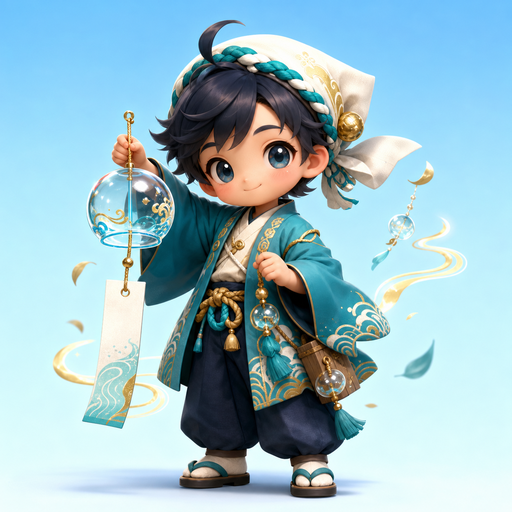

Rotate and tune hanging windbells so gust ribbons ring the requested notes.

Rotate mouths toward the incoming side, tilt outlets to LOW/MID/HIGH, and match the current chip color.
Keys: A/D rotate · W/S tilt · Q/E bell · Z/X/C pitch · Space pulse · R restart.